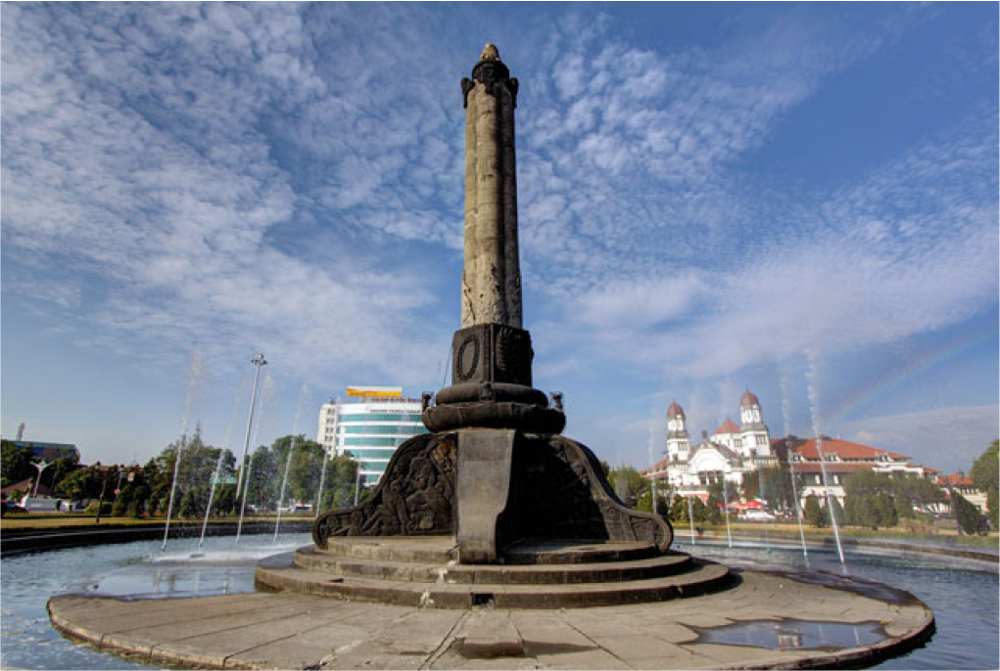

Tugu Muda,
Semarang's monument
Semarang is a vibrant port city on
the north coast of Central Java and also
the provincial capital of Central Java,
Indonesia. Known for its rich historical
heritage and a blend of Javanese,
Chinese, and Dutch cultures, Semarang
offers a unique mix of colonial
architecture, cultural landmarks, and
diverse local cuisine.